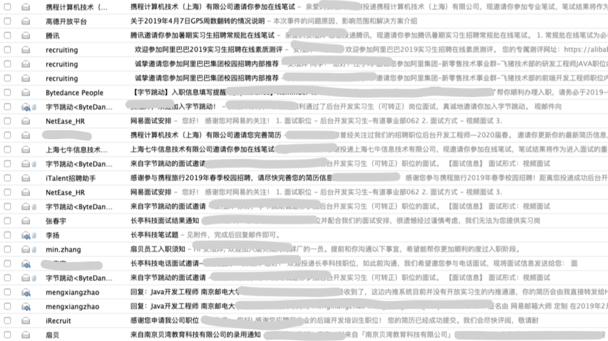

<!DOCTYPE html>
<html>
<head><meta name="generator" content="Hexo 3.8.0">
  <meta charset="utf-8">
  

  
  <title>Hexo</title>
  <meta name="viewport" content="width=device-width, initial-scale=1, maximum-scale=1">
  <meta property="og:type" content="website">
<meta property="og:title" content="Hexo">
<meta property="og:url" content="http://yoursite.com/index.html">
<meta property="og:site_name" content="Hexo">
<meta property="og:locale" content="default">
<meta name="twitter:card" content="summary">
<meta name="twitter:title" content="Hexo">
  
    <link rel="alternate" href="/atom.xml" title="Hexo" type="application/atom+xml">
  
  
    <link rel="icon" href="/favicon.png">
  
  
    <link href="//fonts.googleapis.com/css?family=Source+Code+Pro" rel="stylesheet" type="text/css">
  
  <link rel="stylesheet" href="/css/style.css">
</head>
</html>
<body>
  <div id="container">
    <div id="wrap">
      <header id="header">
  <div id="banner"></div>
  <div id="header-outer" class="outer">
    <div id="header-title" class="inner">
      <h1 id="logo-wrap">
        <a href="/" id="logo">Hexo</a>
      </h1>
      
    </div>
    <div id="header-inner" class="inner">
      <nav id="main-nav">
        <a id="main-nav-toggle" class="nav-icon"></a>
        
          <a class="main-nav-link" href="/">Home</a>
        
          <a class="main-nav-link" href="/archives">Archives</a>
        
      </nav>
      <nav id="sub-nav">
        
          <a id="nav-rss-link" class="nav-icon" href="/atom.xml" title="RSS Feed"></a>
        
        <a id="nav-search-btn" class="nav-icon" title="Search"></a>
      </nav>
      <div id="search-form-wrap">
        <form action="//google.com/search" method="get" accept-charset="UTF-8" class="search-form"><input type="search" name="q" class="search-form-input" placeholder="Search"><button type="submit" class="search-form-submit">&#xF002;</button><input type="hidden" name="sitesearch" value="http://yoursite.com"></form>
      </div>
    </div>
  </div>
</header>
      <div class="outer">
        <section id="main">
  
    <article id="post-20190620" class="article article-type-post" itemscope itemprop="blogPost">
  <div class="article-meta">
    <a href="/2019/06/20/20190620/" class="article-date">
  <time datetime="2019-06-20T13:39:00.000Z" itemprop="datePublished">2019-06-20</time>
</a>
    
  </div>
  <div class="article-inner">
    
    
      <header class="article-header">
        
  
    <h1 itemprop="name">
      <a class="article-title" href="/2019/06/20/20190620/">自闭少年的大三下生活</a>
    </h1>
  

      </header>
    
    <div class="article-entry" itemprop="articleBody">
      
        <p>大三下真的是我大学生活中最为波折的一段时间。当时的我还没有想到自己会在这一学期奔波于找工作，独身一人北漂。</p>
<p>寒假过后，最开始开学的时候，给自己定下的目标是去考研，与其说是考研，更不如说是对未来的迷茫，还没有明确自己的未来规划。但仔细评估下自身实力和定位，感觉自己也许不能再静下心来，花费将近一年的时间踏踏实实准备一次应试考试。不如先去尝试下找一找实习工作吧。</p>
<p>找工作的过程可谓是十分的焦虑和艰难。作为一名双非的非科班生，即便是有一些项目经历，但和其他大佬比还是感觉到了自身的不足和欠缺，在找工作的过程中也是恶补了很多计算机方面的基础知识，刷了一些leetcode，看了不少的面经，经历了很多次的面试，最终还是十分幸运的找到了一份实习。</p>
<p>在3月初的时候，自己的终于找到了第一份工作 — 扇贝英语。扇贝英语在南京本地，主要的技术栈是<code>Python</code>氛围很不错，虽然公司比较小，但是个人感觉是一家小而精的公司 (比苏宁和途牛这种坑货好很多) ，重点是很少加班，生活可以过的很轻松。</p>
<p></p>
<center><small color="gray" style="font-style:italic;"> shanbay办公楼 </small></center>

<p>在扇贝上班的这段时间，自己也在一直找别的机会，虽然感觉自己很菜，但还是有一个冲击大厂的想法，看到周围的大佬都纷纷拿到牛逼的offer，也是倍感焦虑焦虑，四处去投简历，前前后后面试了一些公司，大部分也是发送邮件简历后杳无音讯或是面试后品尝败绩。</p>
<p></p>
<center><small color="gray" style="font-style:italic;"> 3月的邮箱记录 </small></center>

<p>三月中旬，投递了字节跳动的后端开发实习岗位。其实当时压根就没有对头条抱有多大的希望，因为第一波学长帮我们内推头条时，只有我的简历压根没有通过，当时一度让我怀疑人生。第二波内推头条时终于收到了面通知，面试结束后感觉自己已经凉了，因为算法题答的并不是很理想，加上很多比我强的同学也没有顶过头条的轮翻轰炸。当时的我甚至想放弃找工作，直接考研。之后的几天，突然就收到了头条的二面通知，当时的心情真是又惊又喜。在紧张忐忑的经历了上午的二面后，就在中午吃饭的时候，收到了三面的通知，三面的过程也是全程精神紧张，紧张到感觉头晕和眼前发黑。面试官先是问到了我一些 数据库储存过程、poll / epoll模型、还有一些操作系统的底层知识。很尴尬的是这些我都一问三不知，最后面试官无奈的说到”那我们直接来写算法题吧”。第一道算法是快速排序，好在之前有针对的看了快排的原理和算法，不然自己可能真的写不出来。第二道算法是一个数据结构的设计，设计双向循环队列，一开始还很懵逼，在不断和面试官的沟通下勉强实现。当晚就收到了Hr小姐姐的电话。那一晚，我一夜未合眼，因为激动的心情实在难以平复，接下来的几天更是煎熬，因为听说头条也会有最后”offer审批失败”这种case，所以还是经历了5天煎熬的等待后，终于等到了头条的offer。(可惜的是入职时拍的很多照片忘记备份到云中了，基本找不到了)</p>
<hr>
<p>3月末，辞别了扇贝和温暖舒适的校园。只身一人来到人生地不熟的帝都，一人租房，一人吃饭、一人上下班。从每天在学校无忧无虑，到过着朝九晚九的生活。在出租屋床上的第一晚，想到了3年前来到校园的那一晚，是无尽的孤独和不安。 不免感到命运的神奇和魔力。现在回想起3月的经历，仍然感觉十分的刺激，每次面试都十分的紧张焦虑，对于我的心态和精力都是一次磨励。很多时候面临选择和抉择的时候，多去尝试，万一成功呢？也许生活的意义也就是在于不断的去尝试新的东西吧，不管结果怎么样，</p>
<hr>
<p>最后再说说这两个月的实习体会吧。组内的年轻人很多，基本都是不到三十岁。多数都是两电一邮和名校的科班研究生。最开始进入公司接触日常开发的时候很不适应，一度十分的自闭绝望，当时配环境成了我的一大难题。但还是感谢周围热心的同学帮助下，渐渐熟悉开发。日常主要做的也是web服务端开发，很多东西对于我来说都十分的陌生，需要不断的学习。在公司内和学校不同的是，这里的一切都十分的流程化、工程化。每个双月、双周都会有需求评审会用来确定某一时间段内的需求，然后进行排期，最后组内通过周会落实到每一位研发上。由于流程的复杂，所以上下游对接的过程中，沟通协调的成本就会变高。在这种情况下，沟通的技巧就显得尤为重要。在做一个需求时，首先要做的一定是多去思考，考虑到所有可能遇到的问题，然后去找相应的人员问清楚，如果含糊不清，可能最后的结果就会走向歧途，耽误大家的时间。总的来说这两个月对于我，无论是技术还是心态都成长了许多。最后，头条的食堂是真的好吃，差点长胖。</p>
<p></p>
<center><small color="gray" style="font-style:italic;"> lunch1 </small></center>

<p></p>
<center><small color="gray" style="font-style:italic;"> lunch2 </small></center>

<p></p>
<center><small color="gray" style="font-style:italic;"> 运气比较好，如果早入职几天可能领不到最新款的Mac </small></center>


<p><em>暑假后就大四啦，虽然我这种社畜可能要告别暑假了，但还是要好好工作，快乐生活</em>。</p>

      
    </div>
    <footer class="article-footer">
      <a data-url="http://yoursite.com/2019/06/20/20190620/" data-id="cjx93mu3200008z38q3ze3xvk" class="article-share-link">Share</a>
      
      
    </footer>
  </div>
  
</article>


  


</section>
        
          <aside id="sidebar">
  
    

  
    

  
    
  
    
  <div class="widget-wrap">
    <h3 class="widget-title">Archives</h3>
    <div class="widget">
      <ul class="archive-list"><li class="archive-list-item"><a class="archive-list-link" href="/archives/2019/06/">June 2019</a></li></ul>
    </div>
  </div>


  
    
  <div class="widget-wrap">
    <h3 class="widget-title">Recent Posts</h3>
    <div class="widget">
      <ul>
        
          <li>
            <a href="/2019/06/20/20190620/">自闭少年的大三下生活</a>
          </li>
        
      </ul>
    </div>
  </div>

  
</aside>
        
      </div>
      <footer id="footer">
  
  <div class="outer">
    <div id="footer-info" class="inner">
      &copy; 2019 John Doe<br>
      Powered by <a href="http://hexo.io/" target="_blank">Hexo</a>
    </div>
  </div>
</footer>
    </div>
    <nav id="mobile-nav">
  
    <a href="/" class="mobile-nav-link">Home</a>
  
    <a href="/archives" class="mobile-nav-link">Archives</a>
  
</nav>
    

<script src="//ajax.googleapis.com/ajax/libs/jquery/2.0.3/jquery.min.js"></script>


  <link rel="stylesheet" href="/fancybox/jquery.fancybox.css">
  <script src="/fancybox/jquery.fancybox.pack.js"></script>


<script src="/js/script.js"></script>


  </div>
</body>
</html>